two years of robotics, one year of intelligent robots
two years of building robots, and about one year of trying to make them learn. a lot of experiments, failures and things that finally worked. i still get the same excitement i felt when my sim2real robot first picked up a cube lol.
the goal from the start was to work on intelligent systems: systems that use what they perceive and learn to make decisions, act toward a goal and adapt when things change. robots made sense because they have to do all of this in the physical world. as i was starting out, robotics was evolving too: pi0 was open sourced, lerobot was early, NVIDIA released GR00T N1, an open foundation model for humanoid robots. it was still not clear back then what was the general bet to scale up robot learning. highly dexterous manipulation was my interest back then (still kinda is).
so i wanted to get familiar with all the verticals of robot learning. the simplest way i knew was to build things and see what worked.
so the first thing i worked on, almost 1 year and 2 months ago, was sim2real using pure reinforcement learning. we compared 2 methods: flow policy optimization and good ol PPO. our write-up ↗
results were amazing. we struggled a lot with flow exploration, reward explosion and hardware transfer, but overall learned a lot about what exactly bottlenecks good transfer, what are the open problems for sim learning, and how reinforcement learning agents learn.
very very very cool.
now what if we don’t want to learn from scratch? what if we learn from humans? imitation learning was exciting because we could start from demonstrations instead of figuring everything out through rewards. action chunking especially caught my attention.
there are so many clever ways to learn from demonstrations, from ACT and diffusion policy to language-conditioned policies.
but first we needed a way to collect demonstrations on our robots. so we made our own kind of GELLO, cheaper, using digital servos from my old robot arm which we used for sim2real. that worked well! this still needs the robot there while collecting data. collecting away from the robot is a different problem, which we came back to with UMI.
later we made another cheap teleop leader arm using magnetic encoders, around 1/10th the cost of the original leader arm.
another thing that changed how i thought about robotics was pretrained policies. MolmoAct 2 worked zero-shot on YAM arms. it was amazing and literally insane to see a model you install from the internet “just work”. truly my gpt2 moment.
firmly made me believe that scaling data is a big win, especially its quality and distribution, with of course good ol fashioned engineering.
but it still struggled with the more dexterous parts. buddy tried really hard to fold my lossfunk shirt lol.
we also post-trained π0.5 for cloth folding with online RL.
i’m also interested in general-purpose agents that can use computers, write code and control robots. i wanted to try this on our hardware with Astra.
with Sujal, we tried Astra to stand a block upright and wipe a table. we also tried folding. it made the first fold, then messed it up with the next few actions. still a lot to figure out, but i want to keep working on this.
so how do we get better online and learn to recover when things go wrong?
we built a VR teleop setup for the YAMs, inspired by Dream Machines Robotics’ vr-teleop-kit. it lets us step in when MolmoAct 2 gets stuck and collect corrections. the hard part is still getting the policy to work reliably without our help.
getting these models running also meant working on remote and LAN inference. i explored the latency added by sending observations and actions between the robot and a remote server. robodal ↗
coming back to collecting data: what if you want to collect new skills where you can’t take the robots or set them up? that’s where UMI comes in. here comes YAMI (YAM.Interface), a really cheap UMI device made for the YAMs. still working on it.
we collected handheld UMI demonstrations and trained ACT + CLIP to pick and place a green block on the YAM. here’s the demonstration alongside the policy running on the robot.
earlier builds & data collection
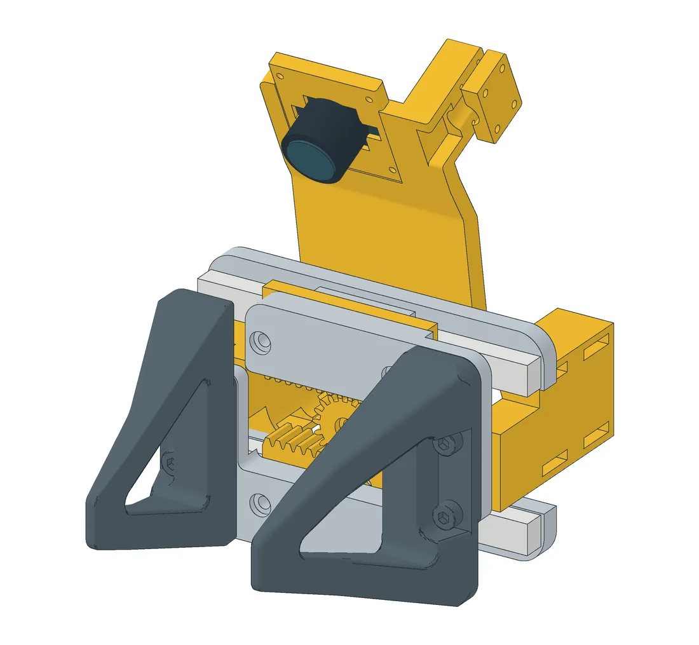
the folding results from Sunday and Dyna are the benchmark i keep coming back to.
cloth folding feels like a good test bed for learning methods because it’s long enough for mistakes to compound: the robot has to grasp, align and fold, and each action changes what the next one needs to do. it’s also easy to randomize the starting state by changing the cloth’s position, orientation or how crumpled it is, then reset and try again. with a fixed folding target and evaluation rules, we can compare methods on the same task and look at fold quality, completion time and recovery as well as success rate. that makes it a practical way to study whether a policy is getting more reliable over a whole sequence.
so currently we’re working toward an open recipe for cloth folding: collecting demonstrations and recovery data, training policies and testing them on our own setup.
right now we’re getting around 70% success on Level 1 folding, where the shirt starts laid out, in our initial 10-trial evaluation. we’re following the evaluation protocol from Hugging Face’s cloth-folding write-up. still a small evaluation, but exciting to see it work. we’re looking at EXPO fine-tuning and offline RL to improve folding, and looking at partial task completion, fold quality and completion time alongside success rate to understand where our policy needs to improve. the goal is to figure out what combination of SFT + RL works well enough to share as an open recipe.
a couple of side experiments also stayed with me. one was about how a policy represents what it sees. Patch Policy uses spatial features from individual image patches instead of pooling the whole image into one representation. i reproduced it on Push-T and the SO-101, and would love to revisit it. my reproduction ↗
the other came from reading Richard Sutton and Andrew Barto’s book on reinforcement learning. highly recommend it. i’m planning a reading group on it soon. thanks @spikedoanz for the recommendation.
reading the book inspired us to try learning from experience on hardware, so we forked Physical Atari and built a cheaper version using STS3215 servos. our fork ↗
again thinking back, this would not have been possible without people who supported me and believed that any of this can be possible independently. all this time i was super fortunate to be working with and be mentored by the most brilliant and amazing people.
thank you Anton, Kunvar, Jiafei, Tirth, Vrushtee, RunPod for compute, and my friends over @ SRA VJTI.
random robotics things
a few other experiments, builds, friends’ robots and things from the lab. some of these go back a little further.
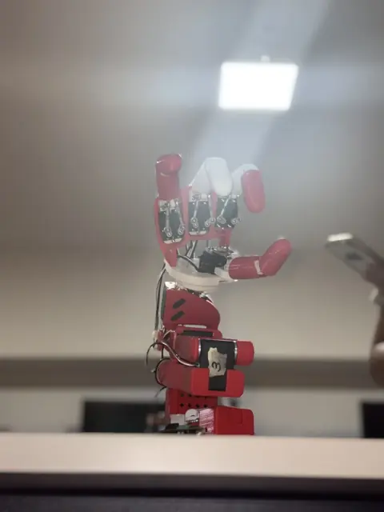
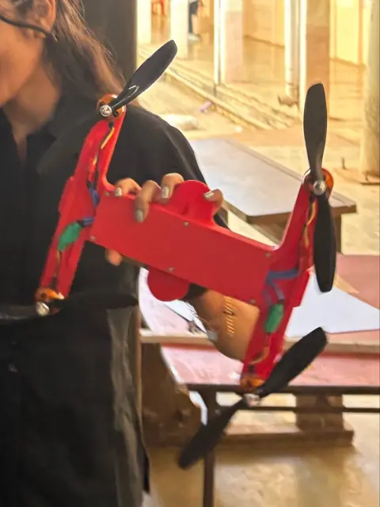
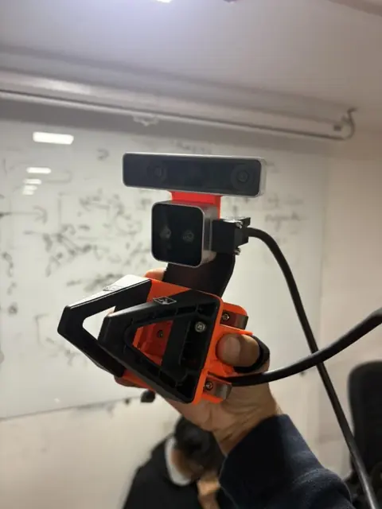
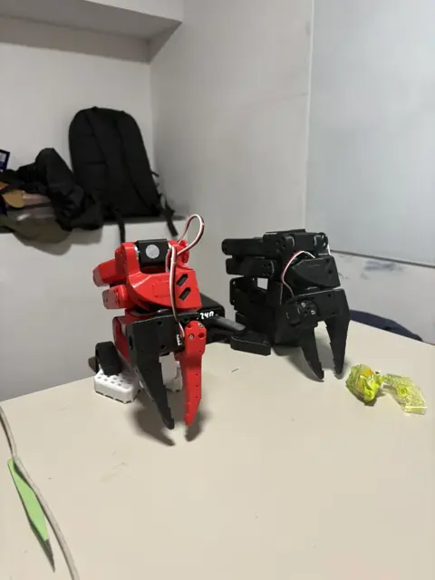
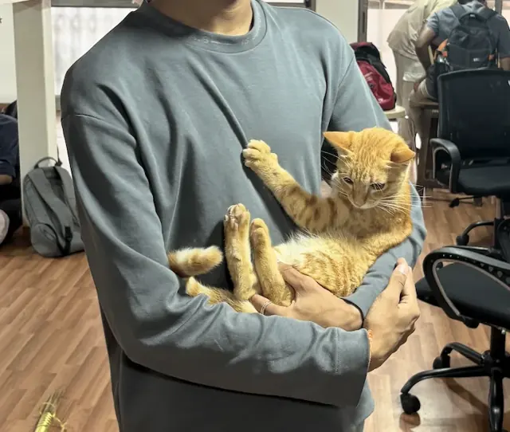
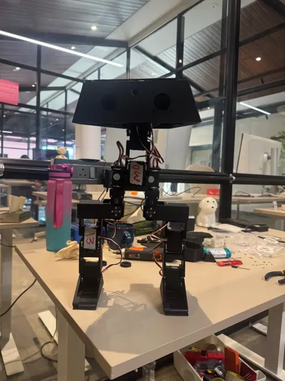
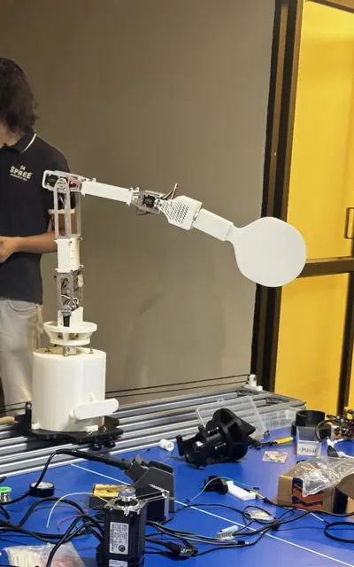
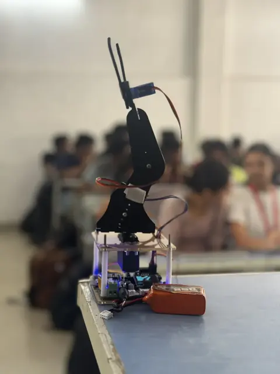
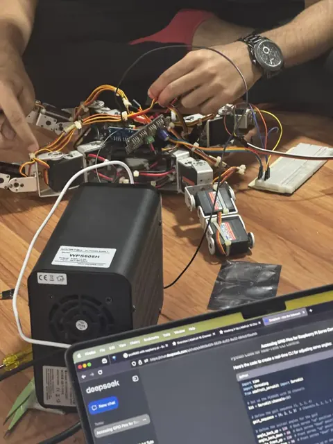
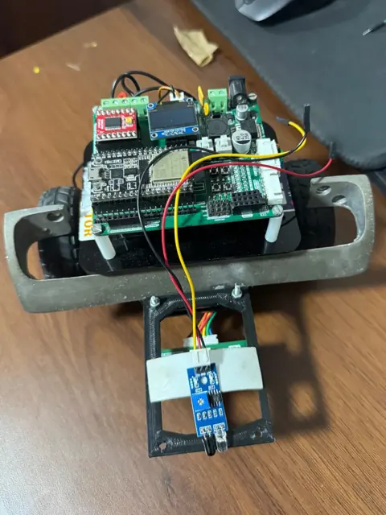